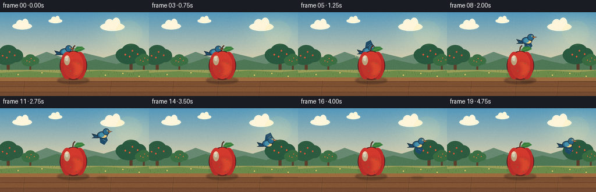
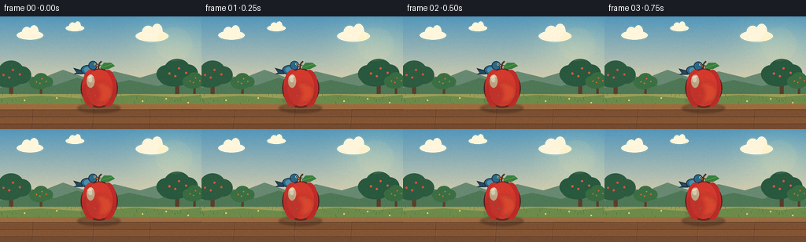

CODING AGENTS AS PIXEL WORLD MODELS
traex/DeepSeek-V4.1-Flash · dynamic_spatial_relationship_0036
点击播放 · 原生 RGB 像素
逐轮保存的候选
回放视频、检查图与代码变化。
每份候选均可单独播放。实际图片检查记录在下方工具轨迹中。
候选 01播放与检查图
点击播放 · 原生 RGB 像素


展开代码变化
--- 上一保存版本
+++ 本次保存版本
@@ -0,0 +1,420 @@
+"""Render a small orchard scene for the text-to-video spatial task."""
+
+from pathlib import Path
+import math
+
+import numpy as np
+from PIL import Image, ImageDraw, ImageFilter
+
+import artifact_io
+
+
+WIDTH = 256
+HEIGHT = 144
+FRAMES = 20
+FPS = 4
+SS = 4 # Supersampling makes the vector-like artwork crisp at 256x144.
+W = WIDTH * SS
+H = HEIGHT * SS
+
+
+def xy(value):
+ return tuple(int(round(v * SS)) for v in value)
+
+
+def box(values):
+ return tuple(int(round(v * SS)) for v in values)
+
+
+def rgba(color):
+ if len(color) == 3:
+ return (*color, 255)
+ return color
+
+
+def gradient_background():
+ y = np.arange(HEIGHT, dtype=np.float32)[:, None]
+ t = np.clip(y / 103.0, 0.0, 1.0)
+ top = np.array([83, 151, 187], dtype=np.float32)
+ bottom = np.array([245, 219, 170], dtype=np.float32)
+ rows = top[None, None, :] * (1.0 - t[:, :, None]) + bottom[None, None, :] * t[:, :, None]
+ image = np.repeat(rows, WIDTH, axis=1)
+
+ # A warm glow behind the orchard.
+ yy, xx = np.mgrid[:HEIGHT, :WIDTH]
+ glow = np.exp(-(((xx - 218) / 47.0) ** 2 + ((yy - 36) / 33.0) ** 2))
+ image = image + glow[:, :, None] * np.array([27, 20, 4], dtype=np.float32)
+ image = np.clip(image, 0, 255).astype(np.uint8)
+ return Image.fromarray(image).resize((W, H), Image.Resampling.BICUBIC)
+
+
+def draw_cloud(draw, x, y, size, alpha=150):
+ color = (255, 246, 220, alpha)
+ draw.ellipse(box((x - size, y - size * 0.35, x + size, y + size * 0.34)), fill=color)
+ draw.ellipse(
+ box((x - size * 0.62, y - size * 0.64, x + size * 0.15, y + size * 0.2)),
+ fill=color,
+ )
+ draw.ellipse(
+ box((x - size * 0.04, y - size * 0.76, x + size * 0.65, y + size * 0.2)),
+ fill=color,
+ )
+
+
+def draw_tree(draw, x, ground_y, scale, trunk_color, leaf_color, fruit_color):
+ trunk_w = 3.0 * scale
+ draw.rounded_rectangle(
+ box((x - trunk_w, ground_y - 42 * scale, x + trunk_w, ground_y)),
+ radius=int(2 * SS),
+ fill=(*trunk_color, 255),
+ )
+ draw.line(
+ [xy((x, ground_y - 30 * scale)), xy((x - 10 * scale, ground_y - 43 * scale))],
+ fill=(*trunk_color, 255),
+ width=int(2 * scale * SS),
+ )
+ draw.line(
+ [xy((x, ground_y - 34 * scale)), xy((x + 11 * scale, ground_y - 47 * scale))],
+ fill=(*trunk_color, 255),
+ width=int(2 * scale * SS),
+ )
+ blobs = [
+ (-16, -42, 16, 14),
+ (0, -49, 20, 17),
+ (17, -43, 15, 14),
+ (-5, -37, 24, 14),
+ ]
+ for bx, by, brx, bry in blobs:
+ draw.ellipse(
+ box(
+ (
+ x + (bx - brx) * scale,
+ ground_y + (by - bry) * scale,
+ x + (bx + brx) * scale,
+ ground_y + (by + bry) * scale,
+ )
+ ),
+ fill=(*leaf_color, 255),
+ )
+ for fx, fy in [(-12, -43), (3, -51), (14, -44), (-3, -39)]:
+ r = 1.7 * scale
+ draw.ellipse(
+ box((x + fx * scale - r, ground_y + fy * scale - r,
+ x + fx * scale + r, ground_y + fy * scale + r)),
+ fill=(*fruit_color, 255),
+ )
+
+
+def draw_background():
+ image = gradient_background().convert("RGBA")
+ draw = ImageDraw.Draw(image, "RGBA")
+
+ draw_cloud(draw, 38, 24, 17, 95)
+ draw_cloud(draw, 95, 15, 12, 70)
+ draw_cloud(draw, 193, 25, 21, 78)
+
+ # Hazy distant hills.
+ draw.polygon(
+ [xy((0, 84)), xy((24, 73)), xy((52, 79)), xy((80, 68)), xy((111, 79)),
+ xy((145, 70)), xy((178, 78)), xy((208, 69)), xy((256, 78)), xy((256, 105)),
+ xy((0, 105))],
+ fill=(104, 137, 113, 255),
+ )
+ draw.polygon(
+ [xy((0, 91)), xy((38, 81)), xy((69, 88)), xy((98, 78)), xy((129, 89)),
+ xy((164, 81)), xy((201, 89)), xy((230, 79)), xy((256, 85)), xy((256, 108)),
+ xy((0, 108))],
+ fill=(78, 119, 86, 255),
+ )
+
+ # Orchard trees frame the action but leave the bird's flight path clear.
+ draw_tree(draw, 14, 109, 0.80, (91, 63, 42), (45, 91, 64), (206, 86, 54))
+ draw_tree(draw, 52, 104, 0.48, (91, 63, 42), (59, 111, 67), (218, 113, 54))
+ draw_tree(draw, 225, 108, 0.82, (88, 61, 43), (40, 88, 62), (218, 91, 54))
+ draw_tree(draw, 247, 103, 0.48, (88, 61, 43), (57, 107, 65), (210, 106, 51))
+
+ # Meadow and table.
+ draw.rectangle(box((0, 99, WIDTH, 115)), fill=(154, 157, 88, 255))
+ draw.polygon(
+ [xy((0, 104)), xy((52, 101)), xy((112, 105)), xy((171, 100)),
+ xy((225, 103)), xy((256, 100)), xy((256, 119)), xy((0, 119))],
+ fill=(108, 139, 74, 255),
+ )
+ draw.rectangle(box((0, 112, WIDTH, HEIGHT)), fill=(119, 78, 50, 255))
+ draw.polygon(
+ [xy((0, 112)), xy((256, 112)), xy((256, 118)), xy((0, 119))],
+ fill=(156, 108, 63, 255),
+ )
+
+ # Warm, irregular wooden planks.
+ plank_colors = [(124, 80, 49), (132, 85, 51), (116, 75, 48)]
+ for index, (top, bottom) in enumerate([(119, 128), (128, 137), (137, 145)]):
+ draw.rectangle(box((0, top, WIDTH, bottom)), fill=(*plank_colors[index], 255))
+ draw.line([xy((0, top)), xy((WIDTH, top))], fill=(82, 53, 38, 180), width=int(0.8 * SS))
+ for x in (42, 119, 191):
+ draw.line(
+ [xy((x, 118)), xy((x - 2, 144))],
+ fill=(85, 55, 39, 130),
+ width=int(0.7 * SS),
+ )
+
+ # Tiny grass blades and meadow flowers.
+ rng = np.random.default_rng(12)
+ for _ in range(52):
+ gx = float(rng.uniform(1, 255))
+ gy = float(rng.uniform(99, 113))
+ color = (55, 99, 57, int(rng.uniform(95, 170)))
+ h = float(rng.uniform(1.5, 4.0))
+ draw.line([xy((gx, gy)), xy((gx + rng.uniform(-1.2, 1.2), gy - h))],
+ fill=color, width=max(1, int(0.55 * SS)))
+ for gx, gy in [(31, 107), (72, 104), (181, 108), (211, 105), (239, 110)]:
+ draw.ellipse(box((gx - 1.1, gy - 1.1, gx + 1.1, gy + 1.1)),
+ fill=(244, 210, 113, 230))
+
+ return image
+
+
+def draw_apple_shadow(image):
+ shadow = Image.new("RGBA", (W, H), (0, 0, 0, 0))
+ draw = ImageDraw.Draw(shadow, "RGBA")
+ draw.ellipse(box((98, 111, 153, 123)), fill=(56, 33, 28, 105))
+ draw.ellipse(box((104, 112, 148, 120)), fill=(47, 29, 25, 72))
+ shadow = shadow.filter(ImageFilter.GaussianBlur(1.2 * SS))
+ return Image.alpha_composite(image, shadow)
+
+
+def draw_apple(image):
+ layer = Image.new("RGBA", (W, H), (0, 0, 0, 0))
+ draw = ImageDraw.Draw(layer, "RGBA")
+ cx, cy = 126.0, 91.0
+
+ # Stem and leaf sit behind the fruit's top contour.
+ draw.line(
+ [xy((cx - 1, cy - 24)), xy((cx, cy - 31)), xy((cx + 3, cy - 34))],
+ fill=(79, 48, 31, 255),
+ width=int(2.0 * SS),
+ )
+ draw.polygon(
+ [xy((127, 65)), xy((132, 59)), xy((141, 59)), xy((146, 63)),
+ xy((138, 67)), xy((130, 68))],
+ fill=(55, 126, 62, 255),
+ )
+ draw.line([xy((129, 65)), xy((142, 61))], fill=(116, 168, 75, 255), width=int(0.8 * SS))
+
+ # Dark contour, then two rounded lobes and a central body.
+ draw.ellipse(box((102.5, 66.5, 149.5, 116.5)), fill=(83, 31, 32, 255))
+ draw.ellipse(box((104, 68, 126.5, 115)), fill=(201, 49, 43, 255))
+ draw.ellipse(box((125.5, 68, 148, 115)), fill=(190, 43, 40, 255))
+ draw.ellipse(box((109, 67.5, 143, 114.5)), fill=(211, 57, 45, 255))
+
+ # Golden-red blush and soft volume.
+ blush = Image.new("RGBA", (W, H), (0, 0, 0, 0))
+ bd = ImageDraw.Draw(blush, "RGBA")
+ bd.ellipse(box((114, 84, 143, 110)), fill=(232, 118, 46, 58))
+ bd.ellipse(box((104, 85, 128, 113)), fill=(126, 29, 35, 58))
+ blush = blush.filter(ImageFilter.GaussianBlur(2.2 * SS))
+ layer = Image.alpha_composite(layer, blush)
+ draw = ImageDraw.Draw(layer, "RGBA")
+
+ # Waxy highlight.
+ draw.ellipse(box((110, 74, 120, 91)), fill=(255, 190, 152, 155))
+ draw.ellipse(box((112, 76, 117, 84)), fill=(255, 235, 208, 175))
+
+ # A few natural speckles and the dimpled base.
+ for sx, sy, r in [(121, 101, 0.7), (134, 88, 0.6), (140, 102, 0.65),
+ (116, 96, 0.5), (131, 109, 0.55), (108, 88, 0.45)]:
+ draw.ellipse(box((sx - r, sy - r, sx + r, sy + r)),
+ fill=(128, 39, 35, 125))
+ draw.arc(box((117, 106, 136, 116)), 12, 168, fill=(126, 32, 33, 170), width=int(0.8 * SS))
+
+ return Image.alpha_composite(image, layer)
+
+
+def draw_bird_shadow(image, x, y, flight):
+ if flight <= 0.02:
+ return image
+ shadow = Image.new("RGBA", (W, H), (0, 0, 0, 0))
+ draw = ImageDraw.Draw(shadow, "RGBA")
+ width = 10.0 + 2.0 * math.sin(min(1.0, flight) * math.pi)
+ alpha = int(65 * min(1.0, flight))
+ draw.ellipse(box((x - width, 117.0, x + width, 121.5)), fill=(55, 35, 28, alpha))
+ shadow = shadow.filter(ImageFilter.GaussianBlur(1.5 * SS))
+ return Image.alpha_composite(image, shadow)
+
+
+def draw_bird(image, x, y, frame, flight):
+ layer = Image.new("RGBA", (W, H), (0, 0, 0, 0))
+ draw = ImageDraw.Draw(layer, "RGBA")
+
+ outline = (31, 47, 61, 255)
+ blue = (41, 105, 139, 255)
+ blue_light = (70, 145, 171, 255)
+ blue_dark = (30, 75, 104, 255)
+ cream = (239, 204, 125, 255)
+ orange = (224, 120, 48, 255)
+
+ # Tail feathers.
+ draw.polygon(
+ [xy((x - 7, y + 1)), xy((x - 18, y - 2)), xy((x - 14, y + 4)),
+ xy((x - 18, y + 6)), xy((x - 6, y + 6))],
+ fill=outline,
+ )
+ draw.polygon(
+ [xy((x - 7, y + 2)), xy((x - 16, y + 0.2)), xy((x - 13, y + 4)),
+ xy((x - 16, y + 5)), xy((x - 6, y + 5))],
+ fill=blue_dark,
+ )
+
+ # Wings: folded while perched, emphatic up/down strokes in flight.
+ if flight <= 0.05:
+ draw.polygon(
+ [xy((x - 4, y - 2)), xy((x + 3, y - 5)), xy((x + 8, y + 1)),
+ xy((x + 3, y + 6)), xy((x - 4, y + 4))],
+ fill=outline,
+ )
+ draw.polygon(
+ [xy((x - 3, y - 1)), xy((x + 3, y - 3.5)), xy((x + 6, y + 1)),
+ xy((x + 2, y + 4)), xy((x - 2, y + 3))],
+ fill=blue_dark,
+ )
+ else:
+ wing = math.sin((frame - 4) * 1.55)
+ if wing >= 0:
+ points = [(x - 4, y - 1), (x - 2, y - 14), (x + 5, y - 18),
+ (x + 9, y - 10), (x + 5, y + 2)]
+ else:
+ points = [(x - 4, y), (x - 3, y + 13), (x + 3, y + 17),
+ (x + 9, y + 9), (x + 6, y + 1)]
+ draw.polygon([xy(point) for point in points], fill=outline)
+ inset = [
+ (px + (0.8 if px >= x else -0.3), py + (0.8 if py >= y else -0.3))
+ for px, py in points
+ ]
+ draw.polygon([xy(point) for point in inset], fill=blue_dark)
+ draw.line(
+ [xy((x + 1, y + (-8 if wing >= 0 else 8))),
+ xy((x + 6, y + (-12 if wing >= 0 else 11)))],
+ fill=(111, 174, 190, 210),
+ width=max(1, int(0.7 * SS)),
+ )
+
+ # Body and belly.
+ draw.ellipse(box((x - 8.5, y - 5.5, x + 9.5, y + 7.0)), fill=outline)
+ draw.ellipse(box((x - 7.3, y - 4.6, x + 8.2, y + 5.8)), fill=blue)
+ draw.ellipse(box((x - 2.0, y - 1.0, x + 8.0, y + 5.4)), fill=cream)
+ draw.ellipse(box((x - 4.5, y - 3.0, x + 4.0, y + 4.0)), fill=blue_light)
+
+ # Head, eye, and beak.
+ hx, hy = x + 7.0, y - 5.0
+ draw.ellipse(box((hx - 5.7, hy - 5.7, hx + 5.7, hy + 5.7)), fill=outline)
+ draw.ellipse(box((hx - 4.8, hy - 4.8, hx + 4.8, hy + 4.8)), fill=blue)
+ draw.polygon(
+ [xy((hx + 3.5, hy - 1.7)), xy((hx + 11.0, hy - 0.4)),
+ xy((hx + 3.7, hy + 2.0))],
+ fill=outline,
+ )
+ draw.polygon(
+ [xy((hx + 4.4, hy - 1.0)), xy((hx + 9.6, hy - 0.2)),
+ xy((hx + 4.3, hy + 1.2))],
+ fill=orange,
+ )
+ draw.ellipse(box((hx + 1.2, hy - 3.0, hx + 3.8, hy - 0.4)), fill=(246, 230, 172, 255))
+ draw.ellipse(box((hx + 2.0, hy - 2.5, hx + 3.3, hy - 1.0)), fill=(19, 28, 37, 255))
+
+ # Tiny feet are visible only in the opening perch.
+ if flight <= 0.05:
+ draw.line([xy((x + 1, y + 5)), xy((x + 1, y + 8))], fill=orange, width=int(0.8 * SS))
+ draw.line([xy((x + 1, y + 8)), xy((x - 1, y + 9))], fill=orange, width=int(0.8 * SS))
+ draw.line([xy((x + 1, y + 8)), xy((x + 3, y + 9))], fill=orange, width=int(0.8 * SS))
+
+ return Image.alpha_composite(image, layer)
+
+
+def draw_takeoff_dust(image, x, y, frame):
+ if frame < 4 or frame > 9:
+ return image
+ layer = Image.new("RGBA", (W, H), (0, 0, 0, 0))
+ draw = ImageDraw.Draw(layer, "RGBA")
+ age = frame - 4
+ alpha = max(0, 100 - age * 12)
+ for i, (dx, dy, r) in enumerate([(-5, 3, 1.3), (0, 5, 1.0), (5, 3, 0.8), (-1, 1, 0.7)]):
+ px = x - 13 - age * (2.0 + i * 0.25) + dx
+ py = y + 6 + age * 0.9 + dy
+ draw.ellipse(box((px - r, py - r, px + r, py + r)),
+ fill=(246, 222, 166, alpha))
+ return Image.alpha_composite(image, layer)
+
+
+def apply_texture(image, frame):
+ array = np.asarray(image.convert("RGB"), dtype=np.int16)
+ rng = np.random.default_rng(400 + frame)
+ grain = rng.integers(-2, 3, size=(array.shape[0], array.shape[1], 1), dtype=np.int16)
+ array = np.clip(array + grain, 0, 255).astype(np.uint8)
+ return Image.fromarray(array)
+
+
+def bird_pose(frame):
+ # Perched behind the apple, then an accelerating arc up and to the right.
+ perched = [
+ (111.0, 67.5),
+ (111.0, 67.4),
+ (111.2, 67.7),
+ (112.0, 68.2),
+ (114.5, 68.0),
+ ]
+ if frame <= 4:
+ return (*perched[frame], 0.0)
+ if frame <= 15:
+ t = (frame - 5) / 10.0
+ eased = 0.5 - 0.5 * math.cos(math.pi * t)
+ x = 119.0 + 86.0 * eased
+ y = 66.0 - 22.5 * math.sin(math.pi * t) + 1.0 * eased
+ return x, y, min(1.0, (frame - 4) / 4.0)
+ return 205.0 + 2.0 * math.sin((frame - 16) * 0.8), 61.5, 1.0
+
+
+def render_frame(frame):
+ background = draw_background()
+ x, y, flight = bird_pose(frame)
+
+ image = draw_apple_shadow(background)
+ image = draw_bird_shadow(image, x, y, flight)
+ image = draw_takeoff_dust(image, x, y, frame)
+ image = draw_bird(image, x, y, frame, flight)
+ image = draw_apple(image)
+
+ # Very subtle sun haze and vignette preserve a painted, cinematic finish.
+ haze = Image.new("RGBA", (W, H), (0, 0, 0, 0))
+ hd = ImageDraw.Draw(haze, "RGBA")
+ hd.ellipse(box((198, 14, 244, 57)), fill=(255, 229, 160, 18))
+ image = Image.alpha_composite(image, haze)
+
+ image = image.resize((WIDTH, HEIGHT), Image.Resampling.LANCZOS)
+ return np.asarray(apply_texture(image, frame), dtype=np.uint8)
+
+
+def main():
+ case_dir = Path(__file__).resolve().parent
+ frames = np.stack([render_frame(index) for index in range(FRAMES)])
+ artifact_io.save(frames, case_dir)
+
+ # A compact playable MP4 is useful alongside the contract artifacts.
+ try:
+ import cv2
+
+ writer = cv2.VideoWriter(
+ str(case_dir / "video.mp4"),
+ cv2.VideoWriter_fourcc(*"mp4v"),
+ FPS,
+ (WIDTH, HEIGHT),
+ )
+ if writer.isOpened():
+ for frame in frames:
+ writer.write(cv2.cvtColor(frame, cv2.COLOR_RGB2BGR))
+ writer.release()
+ except Exception as exc:
+ print(f"MP4 export skipped: {exc}")
+
+
+if __name__ == "__main__":
+ main()
可观测工具轨迹
实际执行的命令与返回图片。
命令 1exit 0
/bin/bash -c "pwd && rg --files -g 'prompt.txt' -g 'GENERATION_RULES.md' -g 'task_spec.json' -g '"'!node_modules'"' -g '"'!*.mp4'"' | sort"
命令 2exit 0
/bin/bash -c "git status --short && find . -maxdepth 2 -type f | sort | sed -n '1,200p'"
命令 3exit 0
/bin/bash -c 'cat prompt.txt'
命令 4exit 0
/bin/bash -c 'cat GENERATION_RULES.md'
命令 5exit 0
/bin/bash -c 'cat task_spec.json'
命令 6exit 0
/bin/bash -c "sed -n '1,240p' artifact_io.py && printf '\\n--- player ---\\n' && sed -n '1,160p' player_template.html"
命令 7exit 0
/bin/bash -c 'command -v chafa || command -v viu || command -v jp2 || command -v img2txt || true'
命令 8exit 0
/bin/bash -c "python - <<'PY'
import PIL, numpy
print('PIL', PIL.__version__, 'numpy', numpy.__version__)
PY"命令 9exit 0
/bin/bash -c "python - <<'PY'
try:
import cv2; print('cv2', cv2.__version__)
except Exception as e: print('no cv2', e)
try:
import scipy; print('scipy', scipy.__version__)
except Exception as e: print('no scipy', e)
PY"命令 10exit 1
/bin/bash -c 'python generate.py'
命令 11exit 0
/bin/bash -c 'python generate.py && find . -maxdepth 2 -type f | sort'
命令 12exit 0
/bin/bash -c "python - <<'PY'
from PIL import Image
im=Image.open('inspection.png')
print(im.size)
# Print a reduced color-block proof of the opening and ending frames.
for name in ['frames/00.png','frames/04.png','frames/10.png','frames/19.png']:
a=Image.open(name).convert('RGB').resize((64,36))
print('\\n'+name)
chars=' .:-=+*#%@'
for y in range(0,36,2):
line=''
for x in range(64):
r,g,b=a.getpixel((x,y)); lum=(r*3+g*6+b)/10
line += chars[min(9,int(lum/256*10))]
print(line)
PY"命令 13exit 0
/bin/bash -c '(ffprobe -v error -select_streams v:0 -show_entries stream=width,height,r_frame_rate,nb_frames,duration -of default=noprint_wrappers=1 video.mp4 || true) && du -h pixels.npz index.html video.mp4 inspection.png'
命令 14exit 0
/bin/bash -c "python - <<'PY'
from pathlib import Path
import numpy as np
from PIL import Image
frames=[]
for p in sorted(Path('frames').glob('*.png')):
a=np.asarray(Image.open(p).convert('RGB'))
frames.append(a)
print(p.name, a.shape, a.dtype)
print('frame_count',len(frames))
print('unique_pixel_counts',len({a.tobytes() for a in frames}))
# Approximate segmentation confirms the red apple stays put while blue bird moves right.
for i,a in enumerate(frames):
r,g,b=[a[:,:,j].astype(int) for j in range(3)]
apple=(r>145)&(r>g*1.45)&(r>b*1.7)&(g<135)
bird=(b>70)&(b>r*1.12)&(g>r*1.08)&(g>b*0.55)&(g<175)
def bbox(mask):
yy,xx=np.where(mask)
return None if len(xx)==0 else (int(xx.min()),int(yy.min()),int(xx.max()),int(yy.max()),int(len(xx)))
print(i, 'apple',bbox(apple),'bird',bbox(bird))
PY"命令 15exit 0
/bin/bash -c "python -m py_compile generate.py artifact_io.py && python - <<'PY'
import json, pathlib
s=json.loads(pathlib.Path('task_spec.json').read_text())
assert s == {'task_type':'t2v','width':256,'height':144,'frames':20,'fps':4.0,'audio':None,'benchmark':'vbench2_subset'}
assert len(list(pathlib.Path('frames').glob('*.png'))) == 20
assert pathlib.Path('pixels.npz').is_file() and pathlib.Path('index.html').is_file()
print('contract artifacts: OK')
PY"命令 16exit 0
/bin/bash -c "python - <<'PY'
from PIL import Image
import numpy as np
chars=' .:-=+*#%@'
for idx in [0,4,10,15,19]:
a=np.asarray(Image.open(f'frames/{idx:02d}.png').convert('RGB'))
print(f'\\nFRAME {idx:02d} crop x90:226 y36:124 (2x2 blocks)')
for y in range(36,124,2):
line=''
for x in range(90,226,2):
r,g,b=a[y:y+2,x:x+2].mean((0,1))
if r>120 and r-g>48 and r-b>55: c='R'
elif r>190 and g>145 and b<145: c='O'
elif r<115 and b>90 and b-g>18 and g-r>25: c='B'
elif r>205 and g>180 and b<175: c='C'
elif r>140 and g>140 and b<120: c='y'
elif r<95 and g>65 and b<90: c='g'
elif b>r+22 and b>g+8: c='s'
else:
lum=(r*3+g*6+b)/10
c=chars[min(9,int(lum/256*10))]
line+=c
print(line.rstrip())
PY"命令 17exit 0
/bin/bash -c "python - <<'PY'
import cv2, numpy as np
from PIL import Image
cap=cv2.VideoCapture('video.mp4')
print('video_open',cap.isOpened())
print('width',int(cap.get(cv2.CAP_PROP_FRAME_WIDTH)))
print('height',int(cap.get(cv2.CAP_PROP_FRAME_HEIGHT)))
print('fps',cap.get(cv2.CAP_PROP_FPS))
print('frame_count',int(cap.get(cv2.CAP_PROP_FRAME_COUNT)))
ok=True
for i in range(20):
ok, bgr=cap.read()
if not ok: break
cap.release()
print('decoded_frames', i+1 if ok else i)
# Narrow subject audit: bird-blue connected components only in the action band.
for idx in [0,4,8,12,16,19]:
a=np.asarray(Image.open(f'frames/{idx:02d}.png').convert('RGB'))
roi=a[48:101,88:230]
r,g,b=[roi[:,:,j].astype(int) for j in range(3)]
mask=((b>75)&(b>r+25)&(b>g+8)&(g>r+15)).astype('uint8')
n, labels, stats, cent=cv2.connectedComponentsWithStats(mask, 8)
comps=sorted([(int(s[4]),tuple(np.round(c,1))) for s,c in zip(stats[1:],cent[1:])],reverse=True)[:3]
print('frame',idx,'bird_components',comps)
PY"命令 18exit 0
/bin/bash -c "python - <<'PY'
from PIL import Image
im=Image.open('frames/19.png').convert('RGB')
# Upscaled single-frame preview for a more legible final composition check.
im.resize((1024,576), Image.Resampling.NEAREST).save('.tmp/final_preview.png')
im.resize((1024,576), Image.Resampling.NEAREST).crop((0,0,1024,576)).save('.tmp/final_preview_2.png')
print(im.getbbox())
PY"命令 19exit 0
/bin/bash -c "python - <<'PY'
from PIL import Image
im=Image.open('frames/19.png').convert('RGB').resize((128,72),Image.Resampling.LANCZOS)
# ANSI truecolor preview using half blocks: each character covers two vertical pixels.
for y in range(0,72,2):
row=[]
for x in range(128):
r1,g1,b1=im.getpixel((x,y)); r2,g2,b2=im.getpixel((x,min(y+1,71)))
row.append(f'\\x1b[38;2;{r1};{g1};{b1}m\\x1b[48;2;{r2};{g2};{b2}mâ')
print(''.join(row)+'\\x1b[0m')
PY"保存候选 1 份；完成命令 19 次；可验证图片返回 0 张。原始 API 响应与完整日志保留在本地。